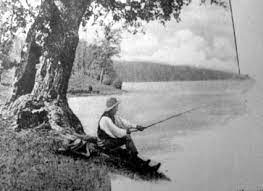
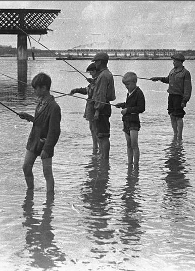
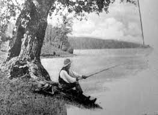
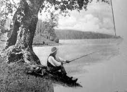
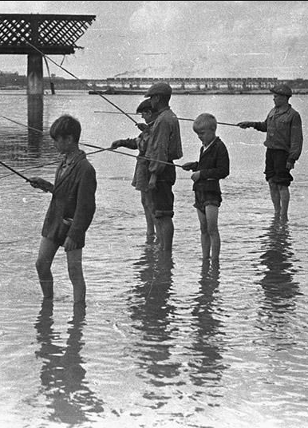
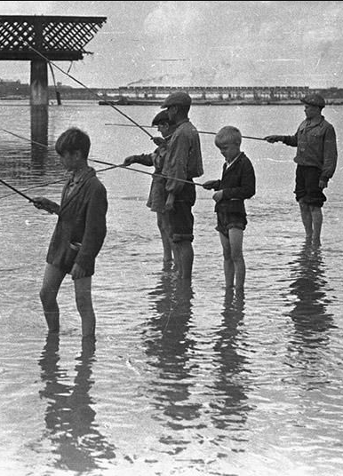
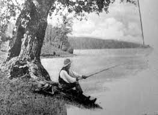
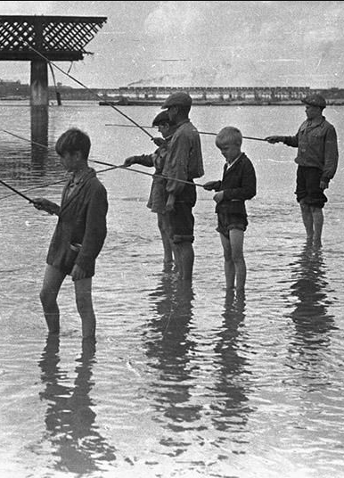
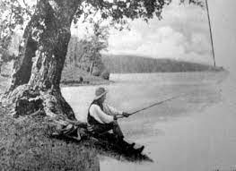
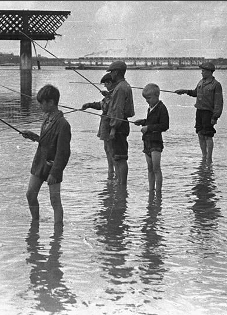

Galeria i źródła
Galeria zdjęć
Wszystkie użyte zdjęcia na stronie


Źródła
Wikipedia
Rybobranie
Wedkuje
Strona glówna (Historia)
Rodzaje Ryb
Galeria i źródła
Wędkarze
Dołącz do nas!

 

 

 


